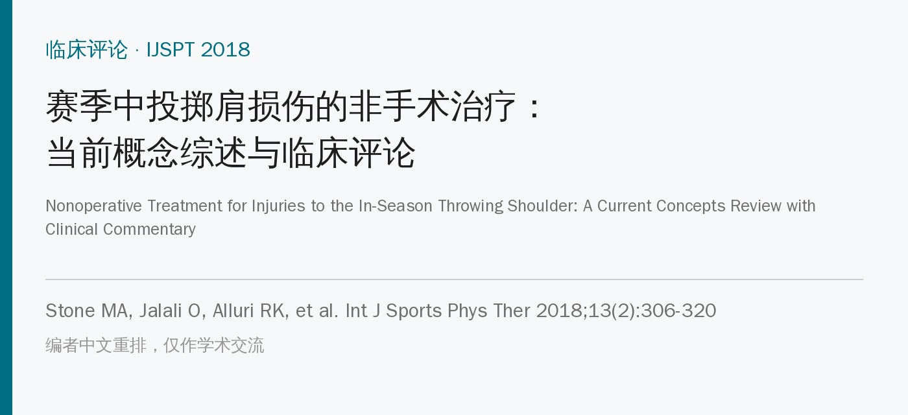
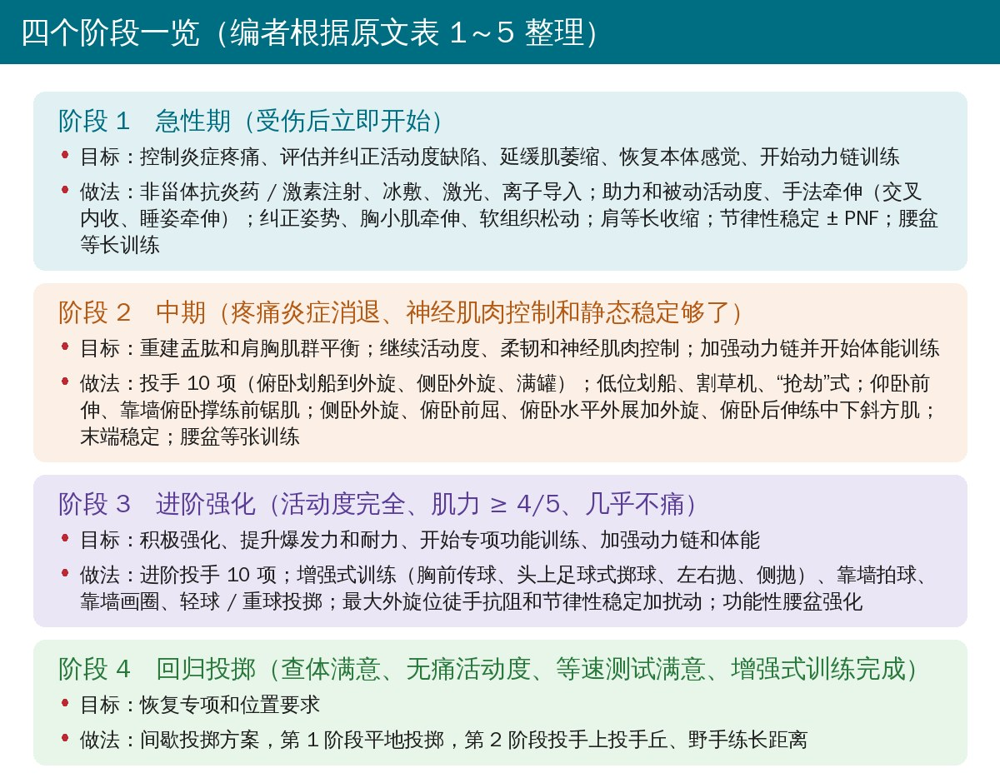
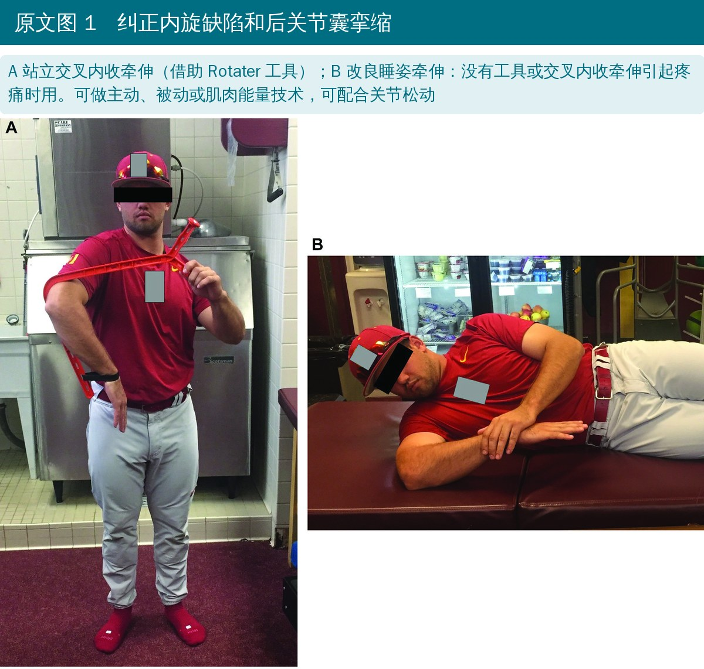
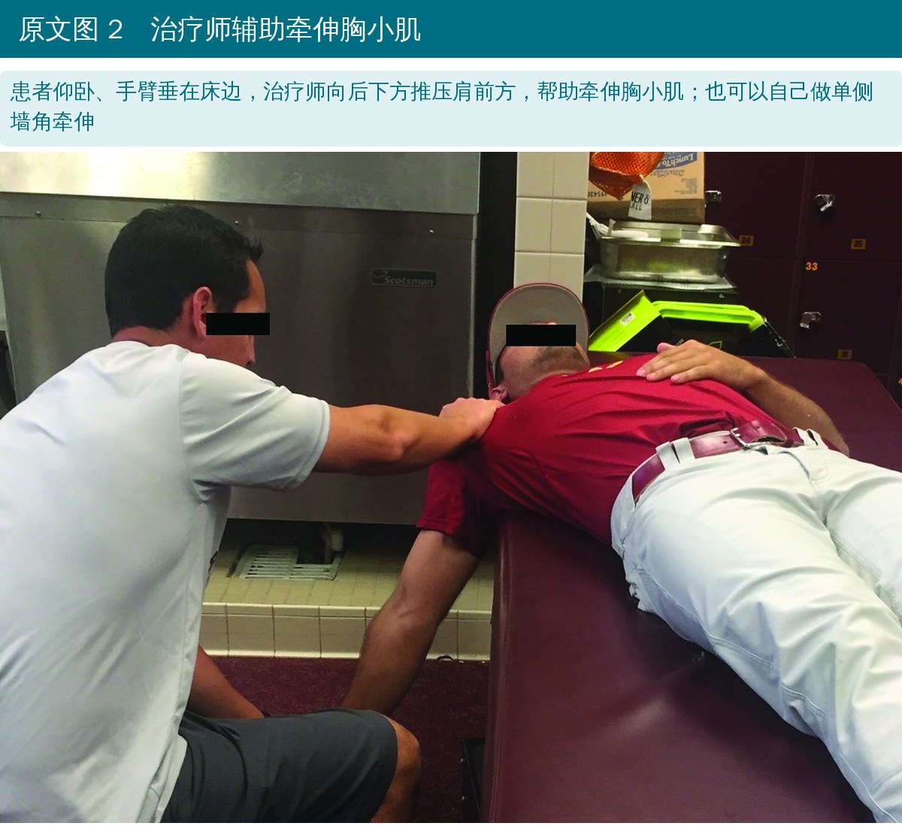
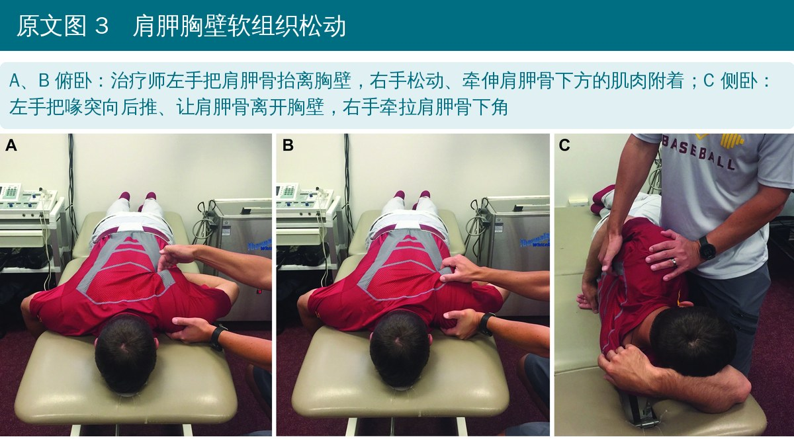
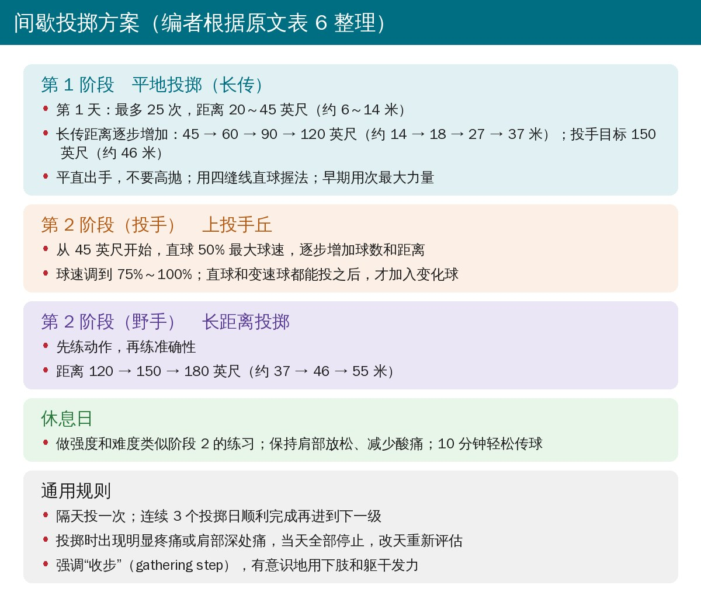
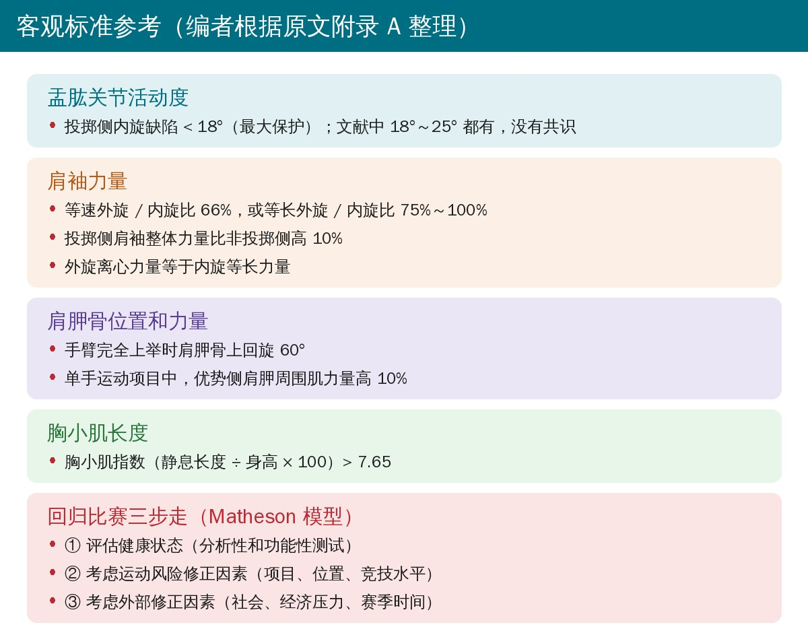

🔖原文信息（编者中文重排）
📚 文献信息
▪ Stone MA, Jalali O, Alluri RK, Diaz PR, Omid R, Gamradt SC, Tibone JE, Mayer EN, Weber A. Nonoperative treatment for injuries to the in-season throwing shoulder: a current concepts review with clinical commentary. Int J Sports Phys Ther. 2018;13(2):306-320. doi:10.26603/ijspt20180306
▪ 中文题目：赛季中投掷肩损伤的非手术治疗：当前概念综述与临床评论
▪ 作者来自美国南加州大学凯克医学院骨科、南加州大学运动医学部
▪ 文章类型：临床评论，证据等级 5 级（专家意见）
反复的过头投掷让肩关节承受极大负荷，投球时肩部内旋角速度可超过 7500°/秒。职业棒球投手 28% 的伤病发生在肩部，最常见的是肩袖、肱二头肌-盂唇复合体和关节囊的问题。
• 大多数可以非手术治疗：康复方案要在“少缺阵”和“长期愈合、防止再伤和代偿性损伤”之间找平衡
• 可改变的危险因素：力量不对称、盂肱关节活动度缺陷、肩胛胸壁关节异常
• 职业运动中，能否在赛季内回场，直接影响球员薪水、合同和球队成绩
这篇临床评论总结了投掷肩常见损伤的非手术治疗证据，并给出一套四阶段的康复和回归方案。
• 康复方案建立在病史、查体和必要的影像上；最好再评估等速肌力和投掷动作，找到表现下降和疼痛的原因
• 按骨性、关节囊、肌肉三层评估：例如肱骨后倾增加（骨性适应）、后方肌肉紧张、后关节囊紧张、肩胛骨位置改变；三者相互作用，投掷运动员的活动度本来就和普通人不同
• 疼痛太重先别查：急性疼痛和炎症控制住之后，再系统检查压痛点、活动度和力量，同时看动力链各环节
• 康复重点四件事：肩袖力量和耐力（含肌群平衡）、纠正活动度缺陷、肩胛胸壁稳定和肩部柔韧、逐步加回专项负荷
• 回归决定要重视和运动员、教练的沟通中得到的主观信息，也要看活动度、力量、平衡和功能这些客观指标

🔖原文表 1～5（编者整理）
• 疼痛会让肩袖“掉线”：健康人实验性诱发肩峰下疼痛后，冈下肌肌电下降 22.7%，外旋力量下降 32.8%；投掷运动员更常见的是内撞击，但同样提示要先控制疼痛
• 药物：口服非甾体抗炎药和 / 或激素注射；作者引用的荟萃分析显示 4～6 周时激素注射比非甾体抗炎药更能改善功能、减轻疼痛，并发症没有增加
• 物理因子：冰敷、低能量激光、超声、离子导入，但长期效果还不明确；持续冷疗有 1 级证据，不过来自术后肩；炎症消退后可用湿热、温水浴、超声促进循环
• 同时减少专项和非专项训练负荷
纠正盂肱关节内旋缺陷（GIRD）：
• 投掷运动员优势侧内旋平均 36°～62°，非投掷侧 42°～71°；投掷侧外旋增加、内旋减少，有助于提高出手速度
• GIRD：投掷侧内旋比对侧少，一般超过 17°；职业投手三个赛季的研究显示有 GIRD 的人受伤风险更高；GIRD 与盂肱不稳、内撞击、关节面侧肩袖部分撕裂和 SLAP 损伤有关
• 肱骨后倾：投掷侧通常比对侧多 10°～15°；225 名职业投手中，肩受伤者优势侧后倾少 4°，肘受伤者多 5°，提示后倾增加保护肩、但不利于肘
• 后方紧张：可能来自三角肌后束、冈下肌、小圆肌反复离心收缩后的炎症和瘢痕；投掷随球动作反复牵拉后关节囊，被认为会让关节囊增厚、限制内旋

🔖原文图 1（加中文说明；原文照片已遮挡面部）
• 随机对照试验的系统综述支持用主动、被动或肌肉能量技术形式的交叉内收牵伸（± 关节松动）改善后方紧张和 GIRD；没有工具或交叉牵伸会痛时，用睡姿牵伸
• 后关节囊紧张时，睡姿牵伸配合关节松动也有证据支持
• 作者经验：积极的助力、被动活动度训练、手法牵伸和松动后，大约 2 周内旋可以恢复到可接受水平
肩胛骨柔韧性和软组织松动：
• 过头运动员肩胛骨运动障碍的报告患病率比非过头运动员高 28%；常见表现为肩胛骨前伸、下沉、前倾；前倾且上回旋不足与内旋丢失强相关
• 处理胸小肌、肩胛提肌、菱形肌和后关节囊的柔韧性；检查肩胛骨各方向活动和胸小肌长度

🔖原文图 2（加中文说明）

🔖原文图 3（加中文说明）
• 延缓肌萎缩：阶段 1 就开始肩内外旋等长收缩；酸痛很轻可以直接做等张，酸痛明显就做次最大等长，阶段 2 再进到积极等张；重点加强外旋肌和肩胛后缩、前伸、下压肌群
• 恢复本体感觉：节律性稳定和带节律性稳定的 PNF 模式，促进肩袖主动肌与拮抗肌共同收缩；肩胛骨用“定位练习”，在理想位置保持 10 秒 × 10 次
• 动力链：查腘绳肌、髋、躯干柔韧和核心力量；先做轻量等张（主动直腿抬高、斜向卷腹、侧卧髋外展），酸痛就改等长（侧平板、臀桥、四点跪和俯卧稳定）；上肢损伤的投掷运动员 Y 平衡测试有下肢适应性改变
• 开始条件：疼痛和炎症消退，神经肌肉控制和静态稳定达到足够水平
• 肩袖：过头运动员外旋肌相对偏弱；外旋肌离心力量负责手臂减速，弱了肱骨头更不稳。用 投手 10 项（Thrower’s 10）：俯卧划船到外旋、侧卧外旋针对冈下肌和小圆肌；冈上肌首选满罐（肩胛面上举、拇指向上）
• 肩胛稳定肌：针对前锯肌弱、上斜方肌过度和过早激活、下斜方肌激活不足和延迟。Kibler 推荐低位划船、割草机、“抢劫”式；前锯肌做仰卧前伸、靠墙俯卧撑；中下斜方肌做侧卧外旋、俯卧前屈、俯卧水平外展加外旋、俯卧后伸
• 继续阶段 1 的活动度、柔韧和神经肌肉训练，加入末端稳定和全范围的 PNF
• 动力链和体能：对角线模式的动作能提高肩胛肌群激活；腰盆进到等张训练；开始针对项目和位置的心肺体能训练
• 开始条件：活动度完全、徒手肌力至少 4/5、几乎不痛
• 练疲劳状态：疲劳会降低下斜方肌激活、让冈下肌代偿，并降低神经肌肉控制、外旋角度和球速；疲劳是少棒投手肩伤的首要因素
• 进阶投手 10 项：加入交替动作和交替的动态 / 持续等长保持；每个动作 3 组 × 10 次。随机对照试验显示 6 周后肩胛面上举的力矩和角冲量提高，但与传统方案相比没有显著差异
• 增强式训练：双手胸前传球、头上足球式掷球、左右抛、侧抛；靠墙拍球、靠墙画圈、轻球和重球投掷练耐力
• 最大外旋位做徒手抗阻、动态稳定和节律性稳定，并加扰动；继续下肢、核心、轴向负荷训练和体能训练
开始条件：查体满意、活动度无痛、等速测试满意（有条件时）、康复进度合适、完成增强式训练。

🔖原文表 6（编者整理）
回归比赛（RTP）：

🔖原文附录 A 和正文（编者整理）
• 由物理治疗师 / 运动防护师、医生和球员充分讨论后决定；教练和运动员的偏好、外部压力都会让决定复杂化
• 既往受伤与再伤风险增加至多 4 倍相关
• Matheson 模型三步：评估健康状态 → 考虑运动风险修正因素 → 考虑外部修正因素；模型有帮助，但个体情况和临床判断最重要
肩袖肌肉异常、GIRD 和肩胛胸壁关节病变共同构成投掷运动员独特的肩部问题。详细的病史和查体是找准病因的关键；康复方案应分阶段、循序渐进地加回专项负荷；回归决定要同时考虑主观评估和活动度、力量、功能的客观测量。
• 证据等级 5 级：临床评论，没有系统检索，四阶段方案和多数数值标准来自专家经验和既往方案
• 不分病种：肩袖、盂唇、关节囊问题用同一套方案，没有按诊断给出不同的进阶节奏或时间框架
• 部分证据是“借来的”：激素注射优于非甾体抗炎药的荟萃分析针对一般肩痛人群；持续冷疗的 1 级证据来自术后肩；都不是赛季中的投掷运动员
• 进阶投手 10 项的随机对照试验没有显示优于传统方案，推荐它主要基于理论
• 客观标准缺少来源和验证：附录 A 的力量比、肩胛上回旋 60°、胸小肌指数等数值没有说明如何测、是否经过验证；阶段 3 的“徒手肌力 4/5”门槛对投掷运动员来说偏低
• 间歇投掷方案很笼统：每级投多少球、强度多大没有说清，作者也承认职业球队的长传参数差异很大
• 价值在于框架：GIRD、肱骨后倾、肩胛骨的处理思路和间歇投掷的基本规则，作为临床参考很实用
• “力矩超过 7500°/秒”：原文说投球时肩部力矩可超过 7500 度 / 秒，度 / 秒是角速度单位，指的应是肩内旋角速度，不是力矩
• 阶段 3 的开始条件不一致：正文写“活动度完全、徒手肌力至少 4/5、几乎不痛”，表 1 还多了“主被动活动度完全”和“关节囊活动度对称”
• “积极”还是“渐进”：表 1、表 4 写阶段 3 目标是“开始积极强化”，正文写“开始渐进强化”
• 阶段和阶段 2 混用：间歇投掷方案分两“阶段（stage）”，正文又说要在“每个阶段（phase）内和阶段之间”进阶；休息日写“做与阶段 2 类似的练习”，看不出指的是康复阶段 2 还是投掷第 2 阶段
• 投手上丘从 45 英尺开始：表 6 写投手第 2 阶段“从投手丘 45 英尺开始”，而标准投球距离是 60 英尺 6 英寸，原文没有解释这一安排
• “主要依据主观指标”：背景部分说回归决定应“很大程度上依据主观指标”，摘要和结论则说主观、客观并重
• “作者的经验”：9 位作者的文章写成单数“the author’s experience”（约 2 周恢复内旋）
• 拼写：Southen California（应为 Southern）、O’Brian’s（应为 O’Brien’s）、anti-inflammatories drugs、“than can aid”（应为 that）
• 先止痛，再查体，再练：疼痛会抑制冈下肌和外旋力量，急性期先控制疼痛炎症，再系统检查活动度、力量和动力链
• 量两侧内旋：投掷侧比对侧少 18° 以上要处理；用交叉内收牵伸或睡姿牵伸（会痛就换），后关节囊紧加关节松动
• 看肩胛骨：前伸、前倾、上回旋不足时，处理胸小肌和肩胛周围软组织，加强下中斜方肌和前锯肌
• 投手 10 项是基本功：俯卧划船到外旋、侧卧外旋、满罐；进阶后加入交替动作和持续等长保持
• 练疲劳和增强式：阶段 3 用双手增强式、靠墙拍球和轻重球投掷，在疲劳状态下练控制
• 间歇投掷守规矩：隔天投一次，连续 3 次顺利再加量；平直出手、四缝线握法、次最大力量起步；肩部深处痛当天就停
• 别忘了下肢和躯干：从阶段 1 就开始动力链训练，投掷时强调收步和下肢、躯干发力
表 1 回归投掷的四个阶段
| 阶段 | 何时开始 | 目标 |
|---|---|---|
| 阶段 1 | 受伤后立即 | 控制急性炎症 / 疼痛；评估并纠正活动度缺陷；延缓肌萎缩；恢复本体感觉；开始动力链训练 |
| 阶段 2 | 疼痛炎症消退，神经肌肉控制和静态稳定达到足够水平 | 重建盂肱和肩胸关节肌群平衡；继续阶段 1 的活动度、柔韧和神经肌肉控制；加强动力链并开始体能训练 |
| 阶段 3 | 主被动活动度完全、徒手肌力至少 4/5、几乎不痛、关节囊活动度对称 | 开始积极强化；提升爆发力和耐力；开始专项功能训练；开始积极的动力链和体能训练 |
| 阶段 4 | 查体满意、活动度无痛、等速测试满意、康复进度合适、完成增强式训练 | 恢复专项和位置要求 |
附录 A 活动度、肌力与平衡、功能的客观指标
| 方面 | 标准 |
|---|---|
| 盂肱关节活动度 | 投掷侧内旋缺陷 < 18°（最大保护）；文献范围 18°～25°，没有共识 |
| 肩袖力量 | 等速外旋 / 内旋比 66% 或等长 75%～100%；投掷侧肩袖整体力量比非投掷侧高 10%；外旋离心力量等于内旋等长力量 |
| 肩胛骨位置和力量 | 手臂完全上举时上回旋 60°；单手项目中优势侧肩胛周围肌力量高 10% |
| 胸小肌 | 胸小肌指数 > 7.65（静息长度 ÷ 身高 × 100） |
附录 B 体格检查清单
| 项目 | 内容 |
|---|---|
| 主观病史、视诊 | — |
| 触诊 | 骨性结构（胸锁关节、肩锁关节、锁骨、肩峰、喙突、结节间沟、肩胛骨）；肌肉（肩袖、三角肌、菱形肌、斜方肌、前锯肌、胸小肌） |
| 活动度（主动和被动） | 盂肱关节、肩胛胸壁关节、弹响 |
| 肌力 | 盂肱关节、肩胛骨、上臂 / 前臂 |
| 特殊检查 | 撞击征（Neer、Hawkins、交叉内收、内撞击）；稳定性（沟槽征、复位试验等）；肱二头肌（Speed、Yergason）；SLAP（Clunk、O’Brien 主动加压、肱二头肌负荷、旋前肱二头肌负荷等） |
| 其他 | 神经检查、颈椎检查；等速和动作分析测试 |
欢迎关注悦美力公众号，获取更多物理治疗的专业知识！
📄参考文献：
Stone MA, Jalali O, Alluri RK, Diaz PR, Omid R, Gamradt SC, Tibone JE, Mayer EN, Weber A. Nonoperative treatment for injuries to the in-season throwing shoulder: a current concepts review with clinical commentary. Int J Sports Phys Ther. 2018;13(2):306-320. doi:10.26603/ijspt20180306
本文为中文解读，仅作学术交流：照片引自原文图 1～图 3（编者加中文说明，面部遮挡为原文所有），四阶段卡、间歇投掷卡和客观标准卡为编者根据原文表格和附录整理，表格为编者翻译。